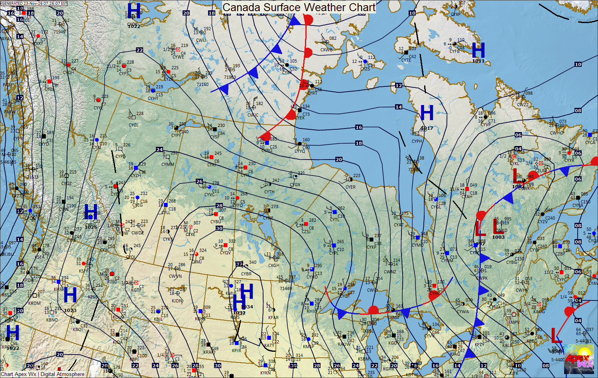

<!-- =========================================================================
     RIGHT SIDEBAR PARTIAL (right-sidebar.html)
     US National Charts, Northeast Outlooks, River Gauges & Space Weather
     ========================================================================= -->

<!-- SECTION 1: US NATIONAL OBSERVATIONS & WARNINGS -->

<!-- Widget: US Surface Weather Chart -->
<div class="sidebar-widget">
  <strong>US Surface Weather Chart</strong><br>
  <a href="https://www.wpc.ncep.noaa.gov/sfc/bwsfc.gif" title="Click for larger image"></a>
  <div class="widget-caption"><a href="https://www.noaa.gov/jetstream/wxmaps"><em>How to read weather maps</em></a></div>
</div>

<!-- Widget: US CONUS Satellite -->
<div class="sidebar-widget">
  <strong>U.S. Satellite 🛰️</strong><br>
  <a href="https://weather.cod.edu/data/satellite/continental/conus/current/conus.truecolor.jpg" title="Click for larger image"></a>
  <div class="widget-caption"><em>Visible/true color (day) | Infrared (night)</em></div>
</div>

<!-- Widget: US Weather Radar -->
<div class="sidebar-widget">
  <strong>US Weather Radar</strong><br>
  <a href="https://s.w-x.co/staticmaps/wu/wu/wxtype1200_cur/conus/thumbnail.png" title="Click for larger image"></a>
  <div class="widget-caption"><em>Weather Underground</em></div>
</div>

<!-- Widget: US Advisories, Watches, & Warnings -->
<div class="sidebar-widget">
  <strong style="font-size: 13px;">US Advisories, Watches, &amp; Warnings</strong><br>
  <a href="https://www.weather.gov/" title="Click for more information"></a>
</div>

<!-- SECTION 2: US NATIONAL PRECIPITATION, TEMPERATURE & EXTENDED OUTLOOKS -->

<!-- Widget: US Precipitation Outlook -->
<div class="sidebar-widget">
  <strong style="font-size: 13px;">US Precipitation Outlook</strong><br>
  <a href="https://www.wpc.ncep.noaa.gov/Prob_Precip/idss-map/mapgen.php?office=None&amp;dataRegion=co&amp;pointpreferences=CONUS&amp;product=expected&amp;ptype=pqpf&amp;accum" title="72-hour US Precipitation Outlook"></a>
</div>

<!-- Widget: US Snow Outlook -->
<div class="sidebar-widget">
  <strong style="font-size: 13px;">US Snow Outlook</strong><br>
  <a href="https://www.wpc.ncep.noaa.gov/Prob_Precip/idss-map/mapgen.php?office=None&amp;dataRegion=co&amp;pointpreferences=CONUS&amp;product=expected&amp;ptype=prob_sn&amp;accum" title="72-hour US Snow Outlook"></a>
</div>

<!-- Widget: US Ice Accumulation Outlook -->
<div class="sidebar-widget">
  <strong style="font-size: 13px;">US Ice Accumulation Outlook</strong><br>
  <a href="https://www.wpc.ncep.noaa.gov/Prob_Precip/idss-map/mapgen.php?office=None&amp;dataRegion=co&amp;pointpreferences=CONUS&amp;product=expected&amp;ptype=prob_ice&amp;accum" title="72-hour Ice Accumulation Outlook"></a>
</div>

<!-- Widget: Yesterday's SPC Storm Reports -->
<div class="sidebar-widget">
  <strong>Yesterday's Storm Reports</strong><br>
  <a href="https://www.spc.noaa.gov/climo/reports/"></a>
</div>

<!-- Widget: Today's US High Temperatures -->
<div class="sidebar-widget">
  <strong style="font-size: 16px;">Today's High Temperatures</strong><br>
  <a href="https://graphical.weather.gov/GraphicalNDFD.php?width=2000&amp;timezone=EDT&amp;sector=CONUS&amp;element=maxt&amp;n=1" title="Click for HD image"></a>
</div>

<!-- Widget: Tonight's US Low Temperatures -->
<div class="sidebar-widget">
  <strong>Tonight's Low Temperatures</strong><br>
  <a href="https://graphical.weather.gov/GraphicalNDFD.php?width=2000&amp;timezone=EDT&amp;sector=CONUS&amp;element=mint&amp;n=1" title="Click for HD image"></a>
</div>

<!-- Widget: 8-14 Day Temperature Outlook -->
<div class="sidebar-widget">
  <strong>8-14 Day Temperature Outlook</strong><br>
  <a href="https://www.cpc.ncep.noaa.gov/products/predictions/814day/814temp.new.gif"></a>
</div>

<!-- Widget: 8-14 Day Precipitation Outlook -->
<div class="sidebar-widget">
  <strong>8-14 Day Precipitation Outlook</strong><br>
  <a href="https://www.cpc.ncep.noaa.gov/products/predictions/814day/814prcp.new.gif"></a>
  <div class="widget-caption"><em><a href="https://www.cpc.ncep.noaa.gov/">NOAA Climate Prediction Center</a></em></div>
</div>

<!-- SECTION 3: TROPICAL ATLANTIC OUTLOOKS -->

<!-- Widget: 2-Day Tropical Atlantic Outlook -->
<div class="sidebar-widget">
  <strong>2-Day Tropical Atlantic Outlook</strong><br>
  <a href="https://www.nhc.noaa.gov/gtwo.php?basin=atlc&amp;fdays=2"></a>
  <div class="widget-caption"><em>Graphics update June - November</em></div>
</div>

<!-- Widget: 7-Day Tropical Atlantic Outlook -->
<div class="sidebar-widget">
  <strong>7-Day Tropical Atlantic Outlook</strong><br>
  <a href="https://www.nhc.noaa.gov/gtwo.php?basin=atlc&amp;fdays=7"></a>
  <div class="widget-caption"><em>Graphics update June - November</em></div>
</div>

<!-- SECTION 4: NORTHEAST REGIONAL SATELLITE & NDFD FORECASTS -->

<!-- Widget: Northeast Regional Satellite -->
<div class="sidebar-widget">
  <strong>Northeast Regional Satellite</strong><br>
  <a href="https://cdn.star.nesdis.noaa.gov/GOES19/ABI/SECTOR/ne/GEOCOLOR/latest.jpg" title="Regional Satellite"></a>
</div>

<!-- Widget: Northeast Severe Weather Outlook -->
<div class="sidebar-widget">
  <strong>Northeast Severe Weather Outlook</strong><br>
  <a href="https://graphical.weather.gov/GraphicalNDFD.php?width=515&amp;timezone=EDT&amp;sector=NORTHEAST&amp;element=convoutlook&amp;n=1"></a>
  <div class="widget-caption"><em><a href="https://www.spc.noaa.gov/new/images/SPC_outlook_final_updated.png">Severe Thunderstorm Outlook Categories</a></em></div>
</div>

<!-- Widget: Northeast Precipitation Outlook -->
<div class="sidebar-widget">
  <strong>Northeast Precipitation Outlook</strong><br>
  <a href="https://graphical.weather.gov/GraphicalNDFD.php?width=515&amp;timezone=EDT&amp;sector=NORTHEAST&amp;element=qpf&amp;n=2" title="Click for more information"></a>
</div>

<!-- Widget: Northeast Snowfall Outlook -->
<div class="sidebar-widget">
  <strong>Northeast Snowfall Outlook</strong><br>
  <a href="https://graphical.weather.gov/GraphicalNDFD.php?width=515&amp;timezone=EDT&amp;sector=NORTHEAST&amp;element=snowamt&amp;n=2" title="Click for larger image"></a>
</div>

<!-- Widget: Northeast Ice Accumulation Outlook -->
<div class="sidebar-widget">
  <strong>Northeast Ice Accumulation Outlook</strong><br>
  <a href="https://graphical.weather.gov/GraphicalNDFD.php?width=515&amp;timezone=EDT&amp;sector=NORTHEAST&amp;element=iceaccum&amp;n=2" title="Click for larger image"></a>
</div>

<!-- Widget: Northeast Wind Gust Outlook -->
<div class="sidebar-widget">
  <strong>Northeast Wind Gust Outlook</strong><br>
  <a href="https://graphical.weather.gov/GraphicalNDFD.php?width=515&amp;timezone=EDT&amp;sector=NORTHEAST&amp;element=windgust&amp;n=4" title="Click for more information"></a>
</div>

<!-- Widget: Northeast Wave Height Outlook -->
<div class="sidebar-widget">
  <strong>Northeast Wave Height Outlook</strong><br>
  <a href="https://graphical.weather.gov/GraphicalNDFD.php?width=515&amp;timezone=EDT&amp;sector=NORTHEAST&amp;element=waveheight&amp;n=5" title="Click for more information"></a>
</div>

<!-- SECTION 5: DROUGHT, LOCAL RIVER GAUGES, CANADA & AURORA -->

<!-- Widget: Maine Drought Monitor -->
<div class="sidebar-widget">
  <strong>Maine Drought Monitor</strong><br>
  <a href="https://droughtmonitor.unl.edu/CurrentMap/StateDroughtMonitor.aspx?ME" title="Click for more information"></a>
</div>

<!-- River Gauge: Saint John River at Fort Kent -->
<div class="sidebar-widget">
  <strong>Saint John River at Fort Kent</strong><br>
  <a href="https://water.noaa.gov/gauges/ftkm1"></a>
  <div class="widget-caption"><em>Ice in winter may affect gauge measurement.</em></div>
</div>

<!-- River Gauge: Fish River at Fort Kent -->
<div class="sidebar-widget">
  <strong>Fish River at Fort Kent</strong><br>
  <a href="https://water.noaa.gov/gauges/fihm1"></a>
  <div class="widget-caption"><em>Ice in winter may affect gauge measurement.</em></div>
</div>

<!-- River Gauge: Allagash River above Allagash -->
<div class="sidebar-widget">
  <strong>Allagash River above Allagash</strong><br>
  <a href="https://water.noaa.gov/gauges/ALLM1"></a>
  <div class="widget-caption"><em>Ice in winter may affect gauge measurement.</em></div>
</div>

<!-- River Gauge: St. John River at Dickey -->
<div class="sidebar-widget">
  <strong>St. John River at Dickey</strong><br>
  <a href="https://water.noaa.gov/gauges/01010500"></a>
  <div class="widget-caption"><em>Ice in winter may affect gauge measurement.</em></div>
</div>

<!-- Widget: Canada Surface Weather Chart -->
<div class="sidebar-widget">
  <strong>Canada Surface Weather Chart</strong><br>
  <a href="D3.png" title="Click for larger image"></a>
  <div class="widget-caption"><em>Chart by Apex Wx with Digital Atmosphere</em></div>
</div>

<!-- Widget: Aurora Outlook -->
<div class="sidebar-widget">
  <strong>Aurora Outlook</strong><br>
  <a href="https://www.swpc.noaa.gov/products/aurora-30-minute-forecast"></a>
  <div class="widget-caption"><em>Learn more about <a href="https://www.weather.gov/images/wrn/Infographics/2022/geomagnetic-storm-scales.png">Geomagnetic Storm Impacts</a></em></div>
</div>